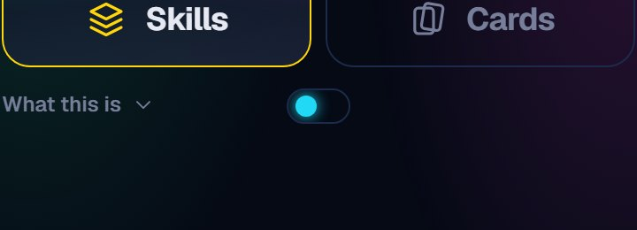
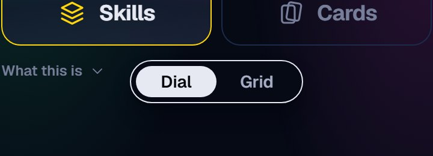
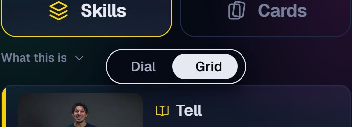
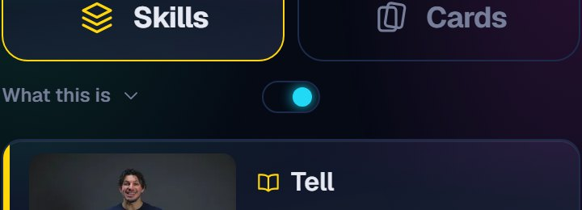
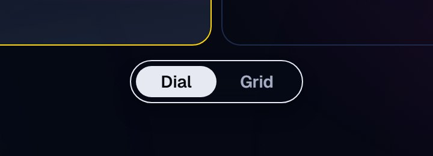
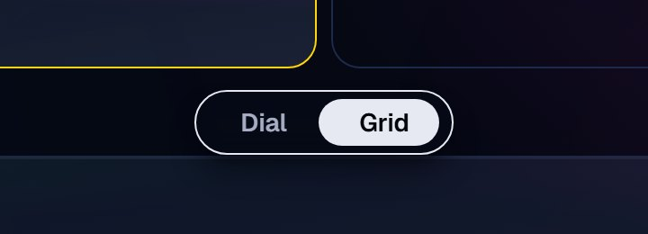
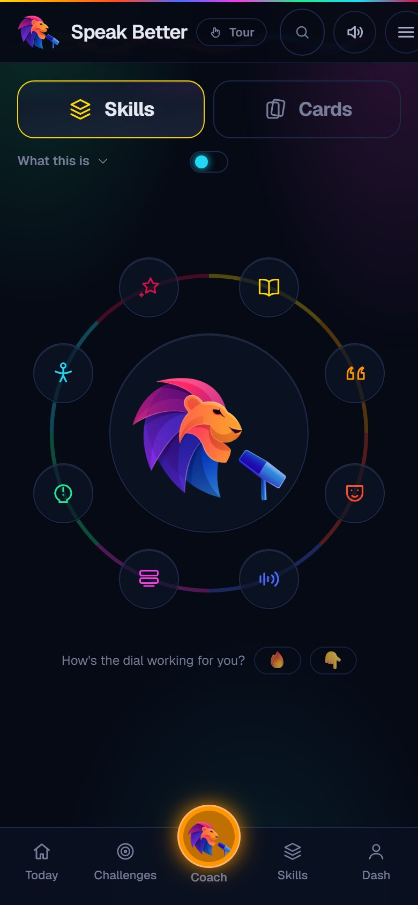
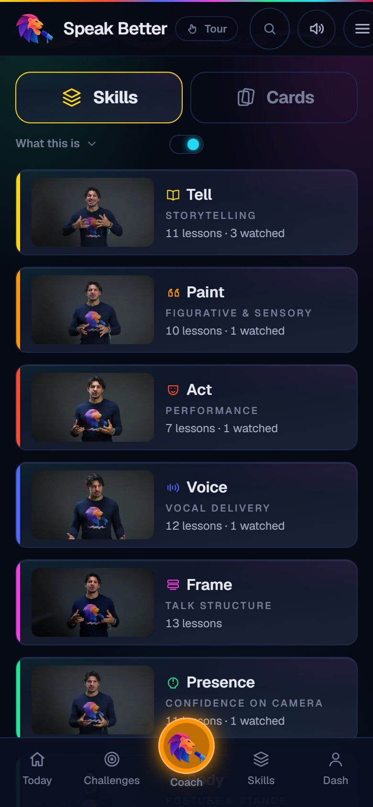
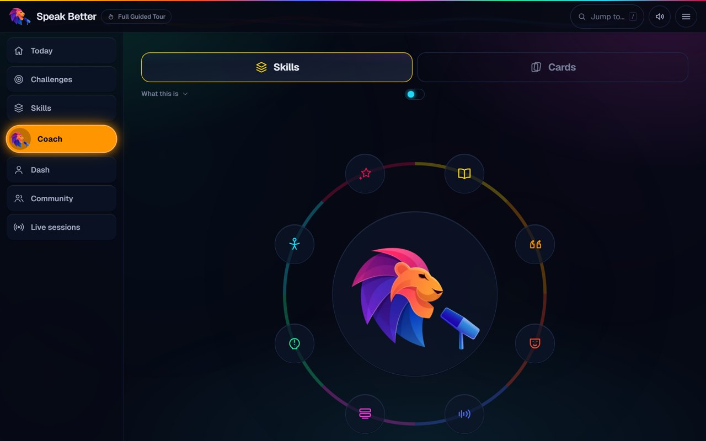
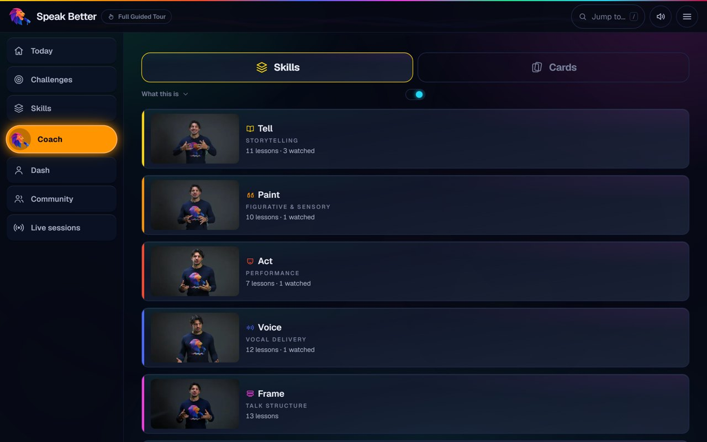

Skills · the Dial / Grid switch
A small pill beside “What this is”: the dot sits left for the Dial, right for the Grid. Hover (or tap) and it opens into Dial | Grid; choose one and it slides across, then shrinks back. It remembers your choice.
Live, no login: speakbetter.app/demo/skills
Try it here
What this is ▾
Showing: DialThe four states - live site, on a phone




On a laptop - hover


Dial vs Grid - phone


Dial vs Grid - laptop

